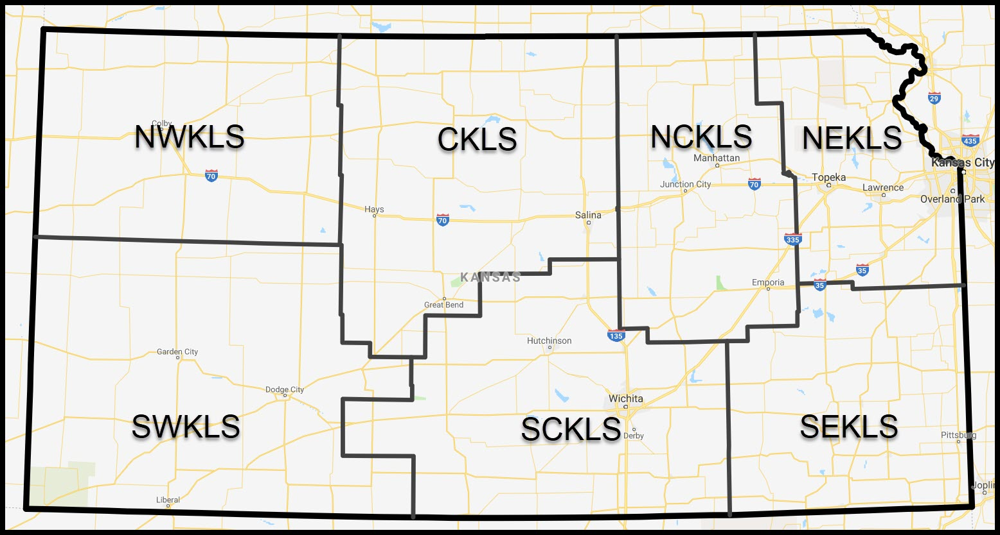
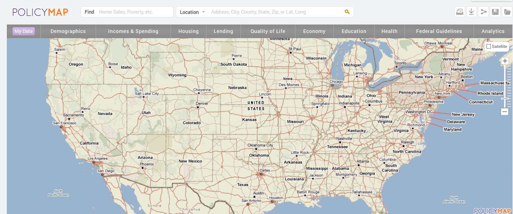

Using Open Refine to clean up address data
George Williams
George Williams
Next Search Catalog Coordinator
Northeast Kansas Library System www.nekls.org
koha-US Past President (2019) www.koha-us.org
These slides available at kohathon2020.hopperdietzel.org/refine
USA

Kansas is in the middle.
51 Libraries in north east Kansas
51 Libraries in the highlighted area.
Community Koha since 2011

(Liblime from 2008-2011)
Open Refine
- Cleaning up messy data
- Find it at openrefine.org
- openrefine.org contains several introductory videos
- It's like Excel on steroids
What I've been using it for
My process
- Run a report in Koha
- Clean up data in Open Refine
- Import patron data back into Koha
- Run Policy Map report
- Import data into Policy Map
Almost Live Demo
I'll share my screen and wow you with how much junk is on my desktop.
Report
SELECT borrowers.cardnumber, borrowers.surname, borrowers.firstname, borrowers.address, borrowers.address2, borrowers.city, borrowers.state, borrowers.zipcode, borrowers.country, borrowers.branchcode, borrowers.categorycode FROM borrowers WHERE borrowers.branchcode NOT LIKE "HIGH_CC" AND borrowers.branchcode NOT LIKE "PH%" AND borrowers.branchcode LIKE <<Choose your library|branches>> AND borrowers.categorycode <> "STAFF" AND borrowers.cardnumber NOT LIKE "0%" AND borrowers.cardnumber IS NOT NULL AND borrowers.cardnumber NOT LIKE ""